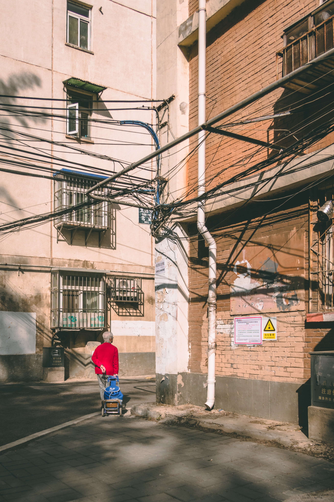
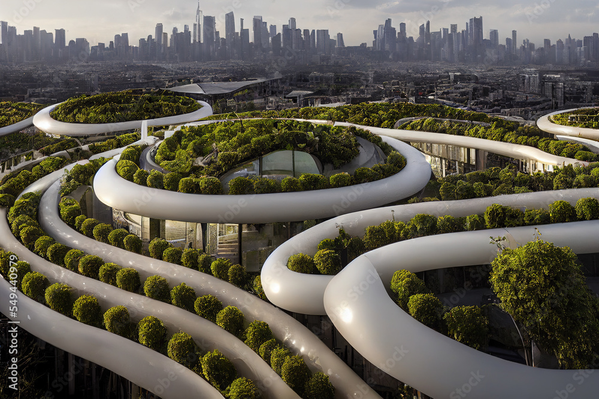
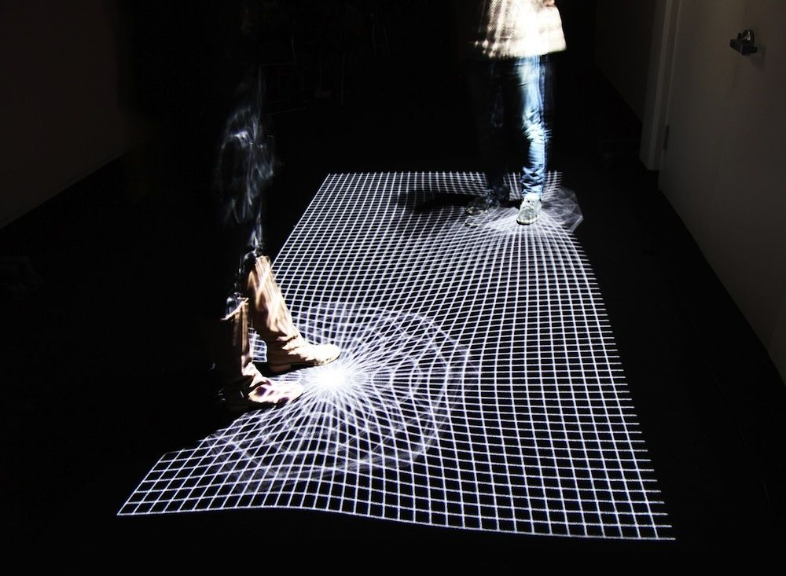

Exploring how individuals define, change, and understand their relationships with different spaces.

Defining Relationships with Places
How do you define your relationship with a place?
"The cafes. How many cafes are there? One, two, three, four. Why did you choose this one? Because you know it, because it's in the sun, because it sells cigarettes. The other shops: antique shops, clothes, hi-fi, etc. Don't say, don't write 'etc.'. Make an effort to exhaust the subj ect, even if that seems grotesque, or pointless, or stupid. You still haven't looked at anything, you've merely picked out what you've long ago picked out." - Georges Perec, "The Street".

Changing Relationships with Places
How can relationships with places change over time?
Knowing Where You Are
Understanding Places in Relation to Others
How do you understand your current place in relation to others?

Understanding the Place You Are In: Aesthetics and Design
